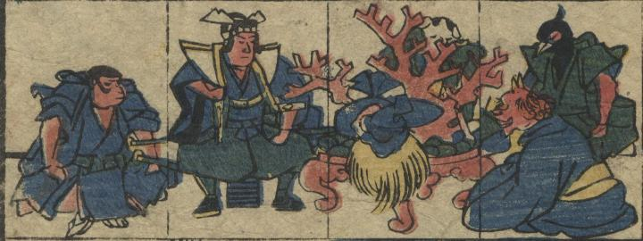

降参した鬼が、桃太郎に宝物を渡している。
出典：親書誌：U426_nichibunken_0349：新板桃太郎噺狐の嫁入；シンパン モモタロウバナシ キツネ ノ ヨメイリ／日付：2014／資源識別子：U426_nichibunken_0349_0001_0011
Copyright (c)2010- International Research Center for Japanese Studies, Kyoto, Japan. All rights reserved.